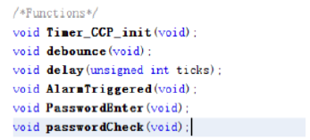
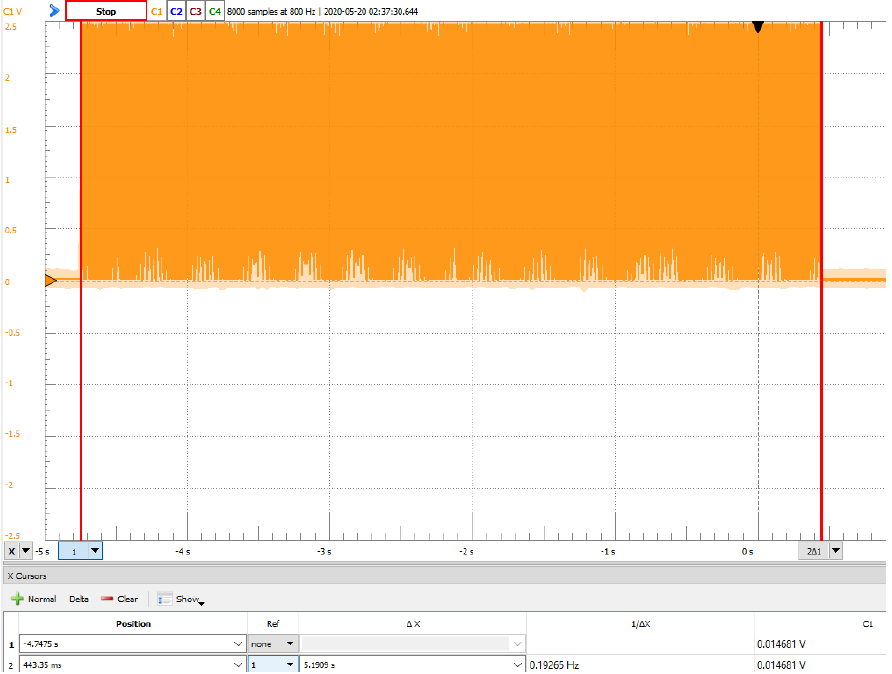

|
||||||||
Introduction Everyone would have some sort of gallery display at home. It could be a canvas painting, a modern style photography, or a fragile sculpture. I’m a person specifically interested in technology gadgets. Since I obtain my first smartphone in 2011, I’ve been attracted by smartphones, along with all the gadgets come with them and all types of innovation inspired by them. Watching the smartphone market changing from diverse to homogenized, I missed the time when the smartphones were designed in different shapes and outlook. To memorize one of my favorite smartphones, HTC One X from 2012, I disassembled it into parts and framed it into a display frame. I also had ambient LED lighting embedded to make it look cool. However, I would sometime get worried that someone might ruthlessly approach my “artwork” and maybe damage it since these parts are not only fragile but also unique (They don’t make these things anymore!). Therefore, I decided to design and build a security system for it. Figure 1.1 Display frame for smartphone parts The overall design will consist will a sensor that detect movement that would trigger alarm to “scare” away the intruders; a password system that can temporarily disable the alarm when I need to; and an ambient light control panel to make the frame looks even cooler. The alarm sensing system will consist with a passive infrared sensor that would detect any approaching movement of object with thermal radiation. When unwanted movement is detected, a red alarm LED will light up and flash, and the loudspeaker will be turned on to play a period of alarm. However, sometime myself would have to get close to the frame display to take a look of my work or move it to other places. Therefore, there should be a way to disable the alarm and there’s nothing more straightforward than a password system. The 4-digit password system allow the user to enter numbers from 1 to 4. Once the password matches the one pre-set in the program, the alarm system would be disabled. The ambient light control is simply control by one pushbutton. One push would turn on the lights, and another push would turn off the lights. However, sometime myself would have to get close to the frame display to take a look of my work or move it to other places. Therefore, there should be a way to disable the alarm and there’s nothing more straightforward than a password system. The 4-digit password system allow the user to enter numbers from 1 to 4. Once the password matches the one pre-set in the program, the alarm system would be disabled. The ambient light control is simply control by one pushbutton. One push would turn on the lights, and another push would turn off the lights. sss sss User's ManualThe design of the Alarm and Password System (APS) is meant to be user friendly. However, please read this manual carefully to ensure its functionalities and the safety of your valuable artworks. Figure 2.1 Overview of APS Setup: The ASP runs with a 9V-12A power supply. Using the designated AC adaptor would ensure the system runs in stable condition. Once the power core is plugged in into the power port of the ASP, (15) red power indicator LED will light up and the system will start running automatically. Note that alarm is disabled by default, meaning that correct password needs to be entered to turn on the alarm system. Due to the property of infrared sensor, please give the passive infrared sensor approximately 10-20 seconds to “charge up”. If your display frame comes with ambient lights like mine, make sure you plug in your lights’ input into the (13)orange(+) and (14)green(-) lights power supply, which can provide 5V output for your ambient lights.
The Alarm The core of the alarm system is the passive infrared sensor (PIR). The (9)PIR sensor in this system is able to read ambient infrared radiation, which mean when a warm body, such as a human, passes in front of it, it would be detected. The PIR sensor is able to read within an angle of 120°. Since the PIR sensor is a very precise and fragile device, please keep it away from high temperature. Once the alarm is triggered, the loudspeaker will play an annoying alarm sound, while the red (8)ALARM LED will turn on as indicator and the ambient light will flash (if an ambient light system is connected to the APS). Each alarm will last for about 5 seconds. The volume of the loudspeaker could be adjected by the (10)volume adjusting knob. The ambient light will be kept on after the alarm is off after 5 seconds. Notice that when the alarm trigger and going, all other futures cannot be accessed until the alarm is off. The green (6)UNLOCK LED indicates if the alarm is disable. Once it’s turned off, the alarm is turned on and functioning. If it’s turned on, the alarm is turned off and would not be triggered anyhow. The Password System The password system can be access by pressing the “1” button. Both the ENTER and ALARM LED will light up and flash once to indicate that the user can now enter his password. The UNLOCK LED will be turned on to indicate that the alarm is temporarily disable during password entering. The pushbuttons (1)“1”, (2)“2”, (3)“3”, and (4)“4” each represent the number 1, 2, 3, and 4 respectively. The user needs to press the buttons in the order of the set password to disable/enable the alarm. For example, if the password is “1212”, then the user would press “1”, “2”, “1”, “2” one by one as entering the password. Once the password is checked by the system, it will invert the current status of the alarm. That is, it would turn off the alarm if the alarm is on and turn on the alarm if its off. Light controlling is also disable during password entering. The Light Control If the ambient light is correctly connected to the circuit of APS, the ○5SWITCH pushbutton can be used to control the lights in the frame display. One push would turn on the lights, and another push would turn off the lights. Reset The (12)RESET pushbutton will reset the entire system. sss sss Hardware Design and Implementation Figure 3.1 Circuit Diagram for APS The Alarm and Password System is based on Microchip PIC16F887 microcontroller. As shown in Figure 2.1, 3 LEDs are connected to pin 2, 3, and 4 (RA0, RA1, RA2) which are set to be digital output pins. 5 pushbuttons are connected to pin 33, 34, 35,36, and 38 (RB0, RB1, RB2, RB3, RB5) which are set to be digital input pins. The loudspeaker is connected to a BS170 NMOSFET whose gate terminal is connected to pin 17 (CCP1). Once CCP1 is set to be high, the NMOSFET will “connect” the drain and source terminals, which will essentially connect the negative terminal of the loudspeaker to ground, activating the sounding. The similar design applies to the ambient light controller, in which a NMOSFET is controlled by pin 5 (RA3) of the microcontroller. The power supply of the system depends on the DC Power Module shown in Figure 2.1, whose input is the standard 120V wall plug with 9V output voltage. With the LM7805 voltage regulator, the voltage will be transformed to stable 5V input to the rest of the circuit. An 8 MHz high speed external crystal resonator is used in the design. This can provide more accurate time-keeping for the system. Figure 3.2 Passive infrared sensor module The passive infrared (PIR) sensor’s data output pin is connected to pin 37 (RB4) as digital input. This input signal becomes high once the PIR sensor detect any motion of a warm object (such as a human) that emits IR radiation. The orange knobs on the PIR sensor module as shown in Figure 2.2 are potentiometers that control the sensitivity and delay time of the sensor. In this particular design, the sensitivity of the sensor is set to medium and delay time is set to be the shortest possible for the stability and functionality of the entire system. The ambient lights of my smartphone display frame were originally running on two 3V button batteries (with total 6V input voltage) as shown in Figure 2.3. After testing, I discovered that 5V input voltage could work just fine.
Therefore, the coin batteries supply was cut off from the ambient light circuit and was soldered into the circuit of APS as shown in Figure 2.4. sss sss Software Design and Implementation Overall Logic Figure 4.1 Overall system flowchart The specification of password entering and password checking logic flows are shown in Figure 4.2 and Figure 4.3. Figure 4.2 Flowchart for password entering Figure 4.3 Flowchart for password checking There are total six additional functions designed in the program as shown in Figure 4.4. Figure 4.4 Functions Calculating Delay Time for the Alarm The Timer_CCP_init function set up and initialize the timers used in the program. In this design, both TIMER1 and TIMER2 are used. TIMER1 is mainly used for setting the frequency of the alarm played by the loudspeaker and TIMER2 is used for time delaying. To have the loudspeaker to play alarm sound for 5 second after the alarm being triggered, specific ticks was calculated. Notice that T1CKPS<1:0> and T1CKPS<1:0> are both set to 0 and 0, meaning the prescale values for both timers are set to 1:1. Since the maximum delay time for one cycle is only 5‚àó10‚àí7‚àó[0ùë•ùêπùêπùêπùêπ]=5‚àó10‚àí7‚àó65535=0.0327675 ùë†ùëíùëê, multiply cycles are needed to achieve a 5-second delay. This was simply design as a 160-cycle for-loop. Figure 4.5 160-cycle for-loop for 5-second delay Therefore, the ticks we need for delay time would be: Calculating Half Period for Tones The tone for the alarm is design to be E3, which has a frequency of 161.82 Hz. With this information, the half period needed for CCP1 can be calculated. Notice that the input for TIMER1 is the internal clock whose frequency is Fosc/4 = 4 MHz/4 = 1 MHz. With the code writted in interrupt_handler(void), CCP1 will be triggered every 3090 ticks, giving the loudspeaker a 161.82 Hz output. Figure 4.6 CCP1 in interrupt_handler Using the same concept, a unlock/lock sound effect is designed for the APS as well. When the user unlocks (disable) the alarm, E3-E3-G3 tones, with each note lasts for 125ms, will be played by the loudspeaker; when the user locks (enable) the alarm, G3-G3-E3 tones, also with each not lasts for 125ms, will be played. The calculation of G3 (192.44 Hz) half period ticks is shown below. sss sss Test Plan and Test Result The testing of delay time and tone frequency could be tested using the Xilinx Digilent Board. By connect Scope 1 DC to pin 17(CCP1), the behavior of the output of it can be monitored using Waveform software. Delay Time Test Figure 5.1 Waveform screenshot of 5-second alarm time test Figure 5.2 Waveform screenshot of unlock/lock sound effect delay time test As shown in Figure 5.1, the actual delay time for the alarm is 5.1909 second, which has a percentage error of 3.82%. This error is within the acceptable range. The major cause of the error could be the 160 for loop which for sure increase the number of instructions processed by the microcontroller. The unlock/lock sound effect has a delay time of 374.38ms as shown in Figure 5.2. Giving the nominal time value being 125ms*3 = 375ms, the percentage error for the sound effect delay time is -0.165%. With a massive number of loops, the delay time is obviously more accurate. Frequency Test Figure 5.3 Waveform screenshot of E3 frequency test Figure 5.4 Waveform screenshot of G3 frequency test On the other hand, the frequency of both E3 and G3 are more accurate. As shown in Figure 5.3 and Figure 5.4, the actual frequency of generated tones are 159.22 Hz and 193.33 Hz. Each has -1.61% and 0.467% percentage error compared to the nominal value of 161.82 Hz and 192.43 Hz. Functionality Test The functionality test of the Alarm and Password System could be performed with three sections: Alarm test, unlock/lock test, and ambient lights test.
The test result is shown in the Table below: sss sss Bill of Material sss sss Reference and AcknowledgmentsThe project is developed based on the PIC16F887 microcontroller and its datasheet. Special thanks to Dr. Michael Jo for patiently teaching ECE 230 Introduction to Embedded System this quarter during this difficult circumstances. |
||||||||
Demostration Video | ||||||||
| |
||||||||